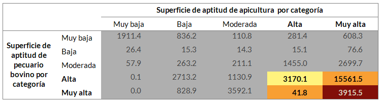
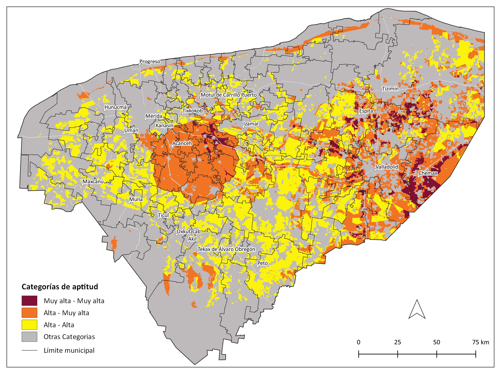
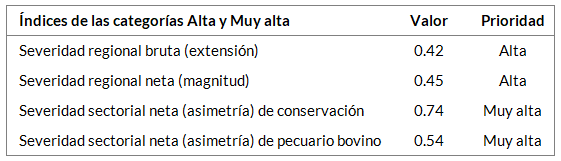
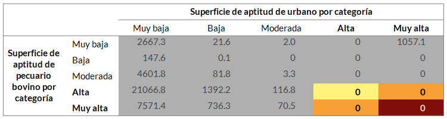
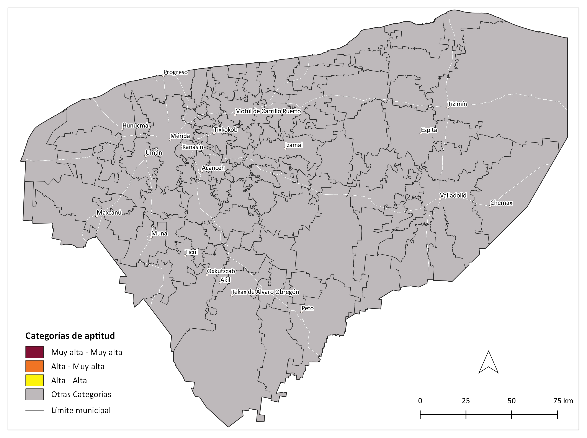
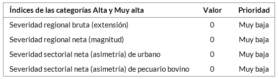

Pecuario bovino¶
Pecuario bovino vs. Apícola¶
Descripción del conflicto¶
- Afectación de floraciones de especies melíferas por uso de herbicidas e insecticidas en potreros.
Recursos afectados¶
- Biodiversidad
Ubicación reportada¶
- Tizimín (humedales)
Fuentes¶
- Ayala Arcipestre 2010
- Taller bovino
Superficie de conflicto por categorías de aptitud (km²)¶

Mapa de conflictos¶

Índices de conflictos ambientales¶
Los índices indican la severidad del conflicto y pueden tener valores entre 0 y 1.

Pecuario bovino vs. Conservación¶
Descripción del conflicto¶
- Pérdida y fragmentación de ecosistemas por invasión o cambio de uso de suelo derivado del crecimien-to de las áreas ganaderas (se mencionan en particular humedales, selvas, hábitat de jaguar).
- Degradación del suelo por compactación debida al pisoteo del ganado o por el uso frecuente de maquinaria pesada.
- Contaminación de cenotes, acuífero y lagunas costeras por la descarga de desechos de las granjas sin tratamiento.
- Contaminación de acuífero por uso de herbicidas e insecticidas en potreros.
- Intrusión salina por extracción de agua para uso pecuario.
- Escasez de agua por extracción de agua para uso pecuario.
Recursos afectados¶
- Agua, aire, vegetación forestal, humedales, suelo
Ubicación reportada¶
- Municipios: Abalá, Acanceh, Buctzotz, Cacalchén, Conkal, Homún, Hunucmá, Kanasín, Muxupip, Panabá, San Felipe, Sucilá, Tekantó, Tekax, Tizimín
- Regiones: Centro, Litoral Centro, Noreste, Noroeste, Oriente
- UMAFOR 3105: 16 municipios (Cenotillo, Chankom, Dzitás, Hocabá, Hoctún, Huhí, Izamal, Kantu-nil, Quintana Roo, Sanahcat, Sotuta, Sudzal, Tekal de Venegas, Tunkás, Xocchel, Yaxcabá)
- Reserva Estatal Dzilam - Reserva de la Biosfera Ría Lagartos (humedales), Reserva Estatal Geohi-drológica del Anillo de Cenotes y Punta Laguna
Fuentes¶
- Batllori, 2019, García de Fuentes et al. 2019, OCDE 2019, Cruz Zamudio 2017, Ellis et al. 2017, Batllori 2016, Cepeda y Amoroso 2016, FAO-SEDER-Gobierno de Yucatán 2016, Ellis et al. 2015, Ch´iibal Mayao´ob A.C. 2011, Ayala Arcipestre 2010, González Acereto y Quezada Euán, 2010, Novelo et al. 2009, Drucker et al. 2003
- Taller bovino
- Clave de registro en encuesta de conflictos ambientales: F7, F13, F14, F31, F45 y F46
Superficie de conflicto por categorías de aptitud (km²)¶

Mapa de conflictos¶

Índices de conflictos ambientales¶
Los índices indican la severidad del conflicto y pueden tener valores entre 0 y 1.

Pecuario bovino vs. Urbano¶
Descripción del conflicto¶
- Contaminación del aire y malos olores generados por los desechos de las granjas porcícolas (emisiones de amoniaco, sulfuros de hidrógeno metano y dióxido de carbono).
Recursos afectados¶
- Aire
Ubicación reportada¶
- Sin dato
Fuentes¶
- Batllori 2019, Drucker et al. 2003
- Taller bovino
- Clave de registro en encuesta de conflictos ambientales: F3 y F9
Superficie de conflicto por categorías de aptitud (km²)¶

Mapa de conflictos¶

Índices de conflictos ambientales¶
Los índices indican la severidad del conflicto y pueden tener valores entre 0 y 1.
